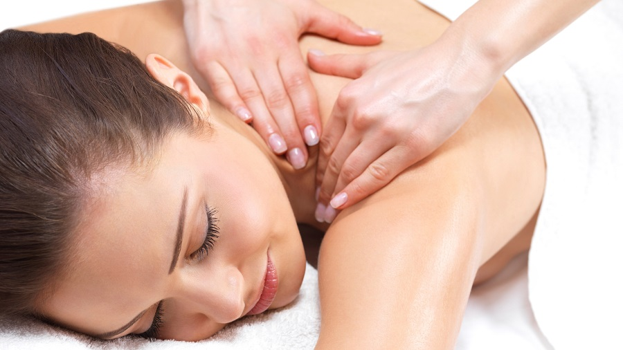
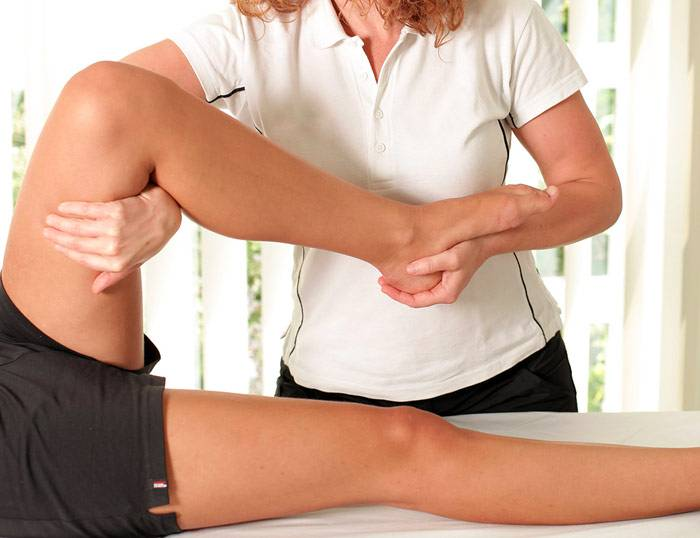

Terapéutico
Este tipo de masaje utiliza técnicas de fisioterapia para tratar trastornos corporales.
Efectos del masaje terapéutico
-Distensión de músculos contracturados
-Mejora la flexibilidad de los tejidos
-Alivia el dolor
-Libera adherencias
Linfático

El drenaje linfatico manual es una técnica de masoterapia y consiste en aplicar masajes suaves sobre diferentes zonas del cuerpo y tiene el objetivo de mejorar la circulación de la linfa y el sistema linfático.
Este masaje mejora la contracción de los vasos linfáticos y ayuda a eliminar edemas, ademas de otros problemas a causa de una mala circulación. El sistema linfatico tiene la función de transportar desechos derivados de la nutrición de las celulas hasta la sangre para que despues se vayan hasta el sistema excretor para eliminarlos.
Pautas para la correcta realización del drenaje
-Es un masaje muy suave e indoloro por lo que debe ser relajante
-El movimiento de las manos debe ser lento y repetitivo y tiene que ir en dirección de los conductos linfáticos
-Dura un poco más de una hora
-Vacía los tejidos y favorece la absorción del líquido sobrante y de los desechos
Deportivo
Este tipo de masaje se realiza para preparar los tejidos al esfuerzo deportivo, se realiza para la prevención y la recuperación antes o despues de una competencia. Esta técnica es de las más importantes de la fisioterapia en el ámbito del deporte
Objetivos
-Preparar los tejidos para el esfuerzo deportivo y los mantiene en un estado óptimo
-Previene las lesiones del entrenamiento y de la competencia
-Ayuda a recuperar las lesiones que se presentan
Clasificación
1. Masaje Preparatorio/pre competición
Se aplica de 6 a 24 horas antes de la competencia para optimizar las capacidades élasticas y contractiles de los tejidos. Entre los objetivos esta: aumentar la circulación sanguinea, aumentar la temperatura interna del músculo y las propiedades viscoelásticas del tejido muscular y conjuntivo y eliminar las adherencias y mialgias localizadas.
2. Masaje de recuperaciónSe aplica entre los 30 minutos y las 6 horas luego de finalizar la competencia. Antes del masaje el deportista debe realizar un enfriamiento activo para disminuir el ritmo y normalizar la frecuencia cardíaca y respiratoria.
3. Masaje de mantenimiento
Este masaje es periodico y se utiliza como un medio diagnostico de tratamiento para hacer parte del programa general de recuperación del deportista.
Descontracturante

Este masaje se realiza ara aliviar el dolor y disminuir las contracturas, aqui se trabajan las cadenas musculares y recuperar la elasticidad del tejido disminuyendo la tensión muscular
Beneficios
-Relajar
-Liberar endorfinas
-Aliviar fatiga física
-Recuperar elasticidad y movilidad de los musculos